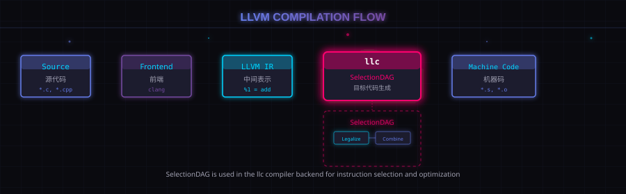
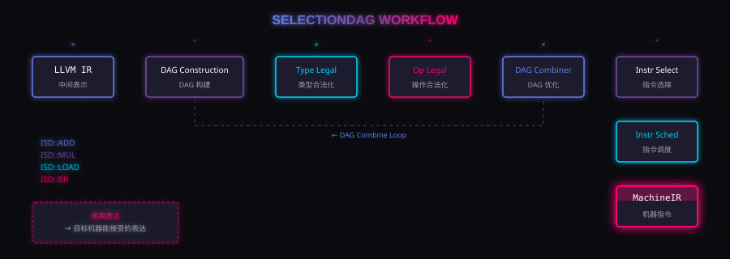

2. SelectionDAG 在编译流程中的位置
LLVM 常见编译流程可以粗略理解成：
Source Code | Frontend | LLVM IR | opt | LLVM IR | llc | Assembly / Machine Code

配图：LLVM 编译流程图
SelectionDAG 主要工作在 llc 阶段，也就是 LLVM IR 被送进后端之后。
在 SelectionDAG 视角里，后端大致会经历：
LLVM IR | SelectionDAG Construction | Type Legalization | Operation Legalization | DAG Combiner | Instruction Selection | Instruction Scheduling | MachineIR / MachineInstr

配图：SelectionDAG 工作流程图
这里最核心的问题是：LLVM IR 很通用，但目标机器不通用。SelectionDAG 的工作就是把"通用表达"逐步变成"目标机器能接受的表达"。